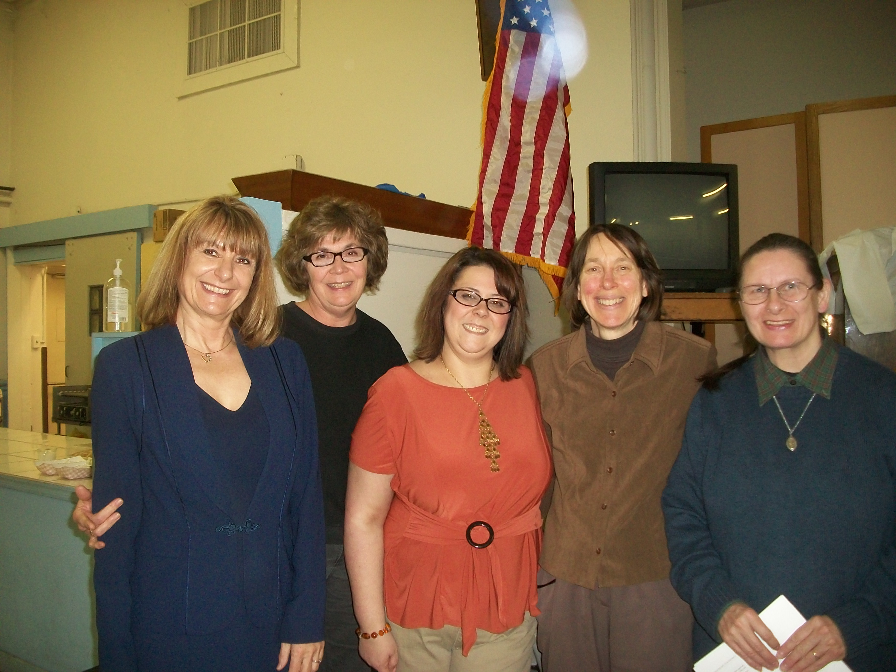

Thank you to our wonderful presenters: Ms. Michele Marciano; IOOV Program and to Ms. Erica Ross; IFSS Family Guidance Center for sharing their stories and providing attendees with local mental health resources. Ms. Augusta Santos stated the mental health disorders has many causes: from genetics to environmental, social, cultural factors including nutrition deficiencies. Nourishing the body with good quality vitamins/minerals is key to optimal health!
COPYRIGHT (c) 2019. ALL RIGHTS RESERVED.